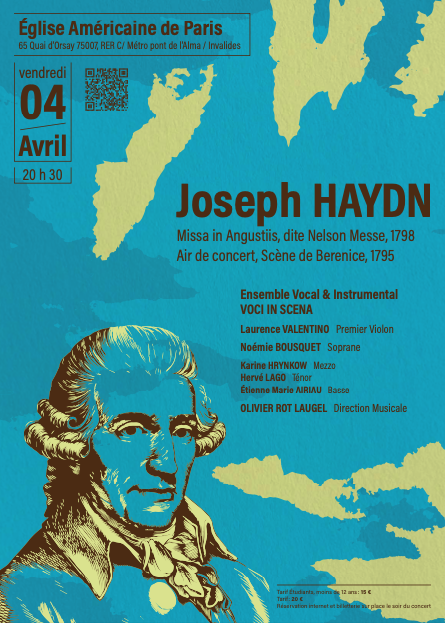

Prochain concert : Brahms, Sehnsucht, 30 mai
Die Sehnsucht…ou l’âme du Romantisme Allemand, un voyage en émotion
« Die Sehnsucht » est un mot intraduisible, qui est l’essence même du romantisme Allemand. C’est l’expression d’un sentiment à la fois triste et gai, le mouvement irrépressible d’un désir ardent, et l’intuition que son accomplissement est improbable ou inaccessible, ce qui le rend vivace, obsessif, et s’exprimant aussi dans le cadre métaphorique de la nature belle, et toute puissante, enfin, véritable aspiration à l’amour idéal et éternel. La musique vocale de Johannes Brahms, vous invitent à un voyage en émotion dans ce répertoire magnifiquement sensible.
Notre dernier concert !
